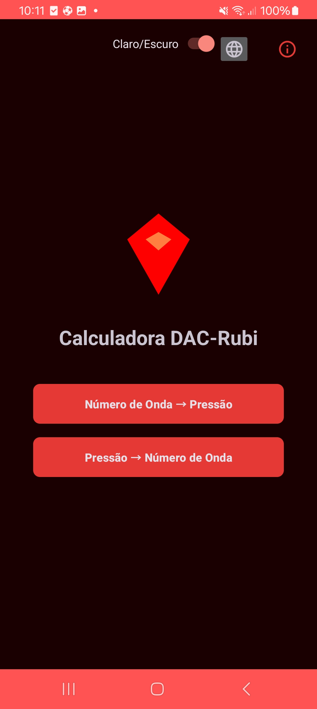
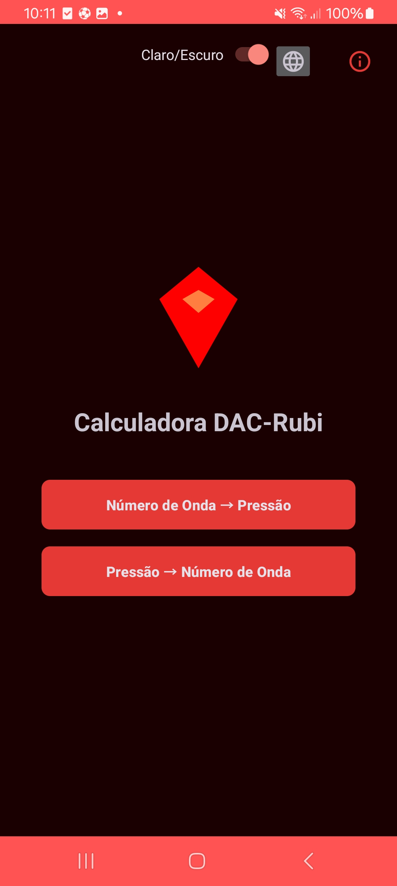

Página Principal
 

Navegação Básica
- 🔄 Alternar entre modos: Toque nos botões principais para mudar entre as funções de conversão
- 🌓 Tema visual: O botão no canto superior direito alterna entre os modos claro e escuro
- 🌐 Idioma: O ícone de globo permite selecionar entre 5 idiomas disponíveis
Controles Superiores

- Tema: Alterna entre cores claras e escuras
- Idioma: Menu com seleção linguística
- Ajuda: Acesso rápido a este manual
- Trocar: Alterna entre as funções principais
Início Rápido
1
Selecione o tipo de conversão desejada
2
Toque no campo de entrada para inserir valores
3
O resultado será calculado automaticamente
Conversão Pressão para Número de Onda
Funcionamento Detalhado
Configuração do Laser

Selecione o comprimento de onda do laser utilizado em seu experimento:
- 488nm: Laser de argônio-ion
- 514.5nm: Padrão ouro para ruby
- 532nm: Laser de estado sólido
- 633nm: Laser HeNe
- 785nm: Para medidas especiais
Entrada de Pressão
Insira o valor da pressão em Gigapascals (GPa):
- Faixa válida: 0 a 500 GPa
- Use ponto ou vírgula como separador decimal
- O cálculo é realizado automaticamente

Equações Utilizadas
| Símbolo | Descrição | Valor |
|---|---|---|
| λ₀ | Comprimento de onda do Ruby em condições ambientes | 694.22 nm |
| λexc | Comprimento de onda do laser de excitação | Variável |
Recursos Avançados
Ajuste de Calibração

Compense variações instrumentais com o ajuste fino:
- Selecione o laser desejado
- Use os botões + e - para ajustar
- O valor é salvo automaticamente por laser
Nota: O ajuste padrão é 0.0 cm⁻¹
Gerenciamento de Resultados
Opções para armazenar seus cálculos:
- Salvar no Histórico: Armazena até 50 conversões
- Exportar para Arquivo: Gera arquivo .txt nos Downloads
- Importar Dados: Carrega cálculos anteriores